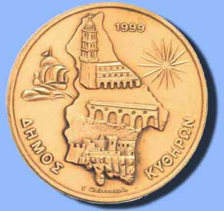

|

Μια σύνθεση αιγαιοπελαγίτικης και βενετσιάνικης αρχιτεκτονικής χαρακτηρίζει την οικιστική φυσιογνωμία του νησιού των Κυθήρων. Και τούτο δεν είναι τυχαίο.
Στο νοτιότερο άκρο της Πελοποννήσου, πάνω από την Κρήτη, ανάμεσα σε Ιόνιο και Αιγαίο, αυτός ο τόπος βρέθηκε για αιώνες στο σταυροδρόμι πολιτιστικών επιρροών Ανατολής και Δύσης. Από τα ανατολικά δέχτηκε την αιγαιοπελαγίτικη νησιωτική αρχιτεκτονική. Από τα δυτικά επηρεάστηκε από τη μακρόχρονη βενετική κυριαρχία και συνδέθηκε πολιτισμικά με τα υπόλοιπα βενετοκρατούμενα νησιά του Ιονίου.
Τη δυτική επίδραση συμπλήρωσε η βρετανική παρουσία, που έγινε αισθητή κυρίως σε δημόσια κτίρια και έργα.
Τέλος, την οικιστική φυσιογνωμία του νησιού καθόρισαν και οι λιγοστοί οικονομικοί πόροι του τόπου, που υποχρέωναν τους κατοίκους να περιορίζονται σε απλές και λιτές κατασκευές.
Τα σημερινά Κύθηρα, τα Κύθηρα ενός πολιτισμού που ισορροπεί ανάμεσα στη σύγχρονη ζωή και τη λαϊκή παράδοση, είναι στενά συνδεδεμένα με το παρελθόν τους.
|
|